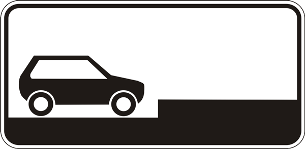

15.1. Зупинка і стоянка транспортних засобів на дорозі повинні здійснюватись у спеціально відведених місцях чи на узбіччі.
15.2. За відсутності спеціально відведених місць чи узбіччя або коли зупинка чи стоянка там неможливі, вони дозволяються біля правого краю проїзної частини (якомога правіше, щоб не перешкоджати іншим учасникам дорожнього руху).
15.3. У населених пунктах зупинка і стоянка транспортних засобів дозволяються на лівому боці дороги, що має по одній смузі для руху в кожному напрямку (без трамвайних колій посередині) і не розділена розміткою 1.1, а також на лівому боці дороги з одностороннім рухом.
Якщо дорога має бульвар або розділювальну смугу, зупинка і стоянка транспортних засобів біля них забороняються.
15.4. Транспортні засоби не дозволяється ставити на проїзній частині в два і більше ряди. Велосипеди, мопеди і мотоцикли без бокового причепа дозволяється ставити на проїзній частині не більше ніж у два ряди.
15.5. Ставити транспортні засоби під кутом до краю проїзної частини дозволяється в місцях, де це не буде перешкоджати руху інших транспортних засобів.
Біля тротуарів або інших місць із пішохідним рухом ставити транспортні засоби під кутом дозволяється лише передньою частиною, а на підйомах – тільки задньою частиною.
15.6. Стоянка всіх транспортних засобів у місцях, позначених дорожніми знаками 5.38, 5.39, встановленими з табличкою 7.6.1, дозволяється на проїзній частині вздовж тротуару, а встановленими з однією з табличок 7.6.2-7.6.5 – легкових автомобілів і мотоциклів тільки так, як показано на табличці.
5.38
5.39
7.61
7.62
7.63

7.64
7.65
15.7. На спусках і підйомах, де спосіб поставлення не регламентується засобами регулювання руху, транспортні засоби необхідно ставити під кутом до краю проїзної частини так, щоб не створювати перешкод іншим учасникам дорожнього руху і виключити можливість для самовільного руху цих засобів.
На таких ділянках допускається ставити транспортний засіб уздовж краю проїзної частини, повернувши керовані колеса таким чином, щоб виключалась можливість самовільного руху транспортного засобу.
15.8. На трамвайній колії попутного напрямку, розташованій ліворуч на одному рівні з проїзною частиною для руху нерейкових транспортних засобів, дозволяється зупинка лише для виконання вимог цих Правил, а на розташованих біля правого краю проїзної частини – лише для посадки (висадки) пасажирів чи виконання вимог цих Правил.
У цих випадках не повинно створюватись перешкод для руху трамваїв.
15.9. Зупинка забороняється:
а) на залізничних переїздах;
б) на трамвайних коліях (крім випадків, обумовлених пунктом 15.8 цих Правил);
в) на естакадах, мостах, шляхопроводах і під ними, а також у тунелях;
г) на пішохідних переходах і ближче 10 м від них з обох боків, крім випадків надання переваги в русі;
ґ) на перехрестях та ближче 10 м від краю перехрещуваної проїзної частини за відсутності на них пішохідного переходу, за винятком зупинки для надання переваги в русі та зупинки проти бокового проїзду на Т-подібних перехрестях, де є суцільна лінія розмітки або розділювальна смуга;
д) у місцях, де відстань між суцільною лінією розмітки, розділювальною смугою чи протилежним краєм проїзної частини і транспортним засобом, що зупинився, менше 3 м;
е) ближче 30 м від посадкових майданчиків для зупинки маршрутних транспортних засобів, а коли їх немає – ближче 30 м від дорожнього знака такої зупинки з обох боків;
є) ближче 10 м від позначеного місця виконання дорожніх робіт і в зоні їх виконання, де це створить перешкоди технологічним транспортним засобам, що працюють;
ж) у місцях, де буде неможливим зустрічний роз’їзд або об’їзд транспортного засобу, що зупинився;
з) у місцях, де транспортний засіб закриває від інших водіїв сигнали світлофора або дорожні знаки;
и) ближче 10 м від виїздів з прилеглих територій і безпосередньо в місці виїзду.
15.10. Стоянка забороняється:
а) у місцях, де заборонена зупинка;
б) на тротуарах (крім місць, позначених відповідними дорожніми знаками, встановленими з табличками);
в) на тротуарах, за винятком легкових автомобілів та мотоциклів, які можуть бути поставлені на краю тротуарів, де для руху пішоходів залишається щонайменше 2 м;
г) ближче 50 м від залізничних переїздів;
ґ) поза населеними пунктами в зоні небезпечних поворотів і випуклих переломів поздовжнього профілю дороги з видимістю або оглядовістю менше 100 м хоча б в одному напрямку руху;
д) у місцях, де транспортний засіб, що стоїть, зробить неможливим рух інших транспортних засобів або створить перешкоду для руху пішоходів;
е) ближче 5 м від контейнерних майданчиків та/або контейнерів для збирання побутових відходів, місце розміщення або облаштування яких відповідає вимогам законодавства;
є) на газонах.
15.11. У темну пору доби і в умовах недостатньої видимості стоянка поза населеними пунктами дозволяється лише на майданчиках для стоянки або за межами дороги.
15.12. Водій не повинен залишати транспортний засіб, не вживши всіх заходів, щоб не допустити його самовільного руху, проникнення до нього і (або) незаконного заволодіння ним.
15.13. Забороняється відчиняти двері транспортного засобу, залишати їх відчиненими і виходити з транспортного засобу, якщо це загрожує безпеці і створює перешкоди іншим учасникам дорожнього руху.
15.14. У разі вимушеної зупинки в місці, де зупинку заборонено, водій повинен вжити всіх заходів, щоб прибрати транспортний засіб, а за неможливості це зробити – діяти згідно з вимогами пунктів 9.9-9.11 цих Правил.
15.15. На проїзній частині забороняється встановлення предметів, що перешкоджають проїзду чи паркуванню транспортних засобів, за винятком випадків:
оформлення дорожньо-транспортної пригоди;
виконання дорожніх робіт або робіт, пов’язаних із зайняттям проїзної частини;
обмеження або заборони руху транспортних засобів та пішоходів у випадках, передбачених законодавством.